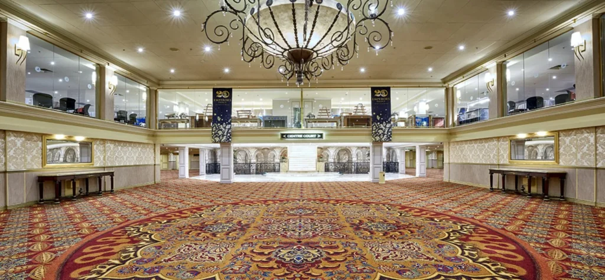

📞 +971 58 884 5033✉️ info@profxmedia.comMon – Fri: 9:00 – 18:30


Inside Emperors Palace, home of Centre Court.
The venue

Inside Emperors Palace, home of Centre Court — the atrium at the heart of the complex.

Traders Expo Johannesburg news & updates